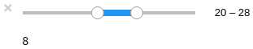
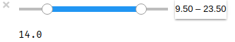
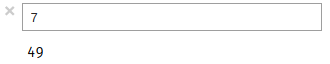
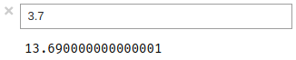
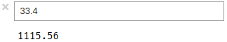

ボツネタ供養の第二弾です。ipywidgets のほぼ全てのウィジェットを大盤振る舞いして紹介しちゃいます。
ipywidgets にはさまざまなウィジェットクラスが用意されています。
今回は Numeric ウィジェットの説明と使い方の事例を紹介します。
数値型の値を扱うウィジェットです。
| 引数 | 説明 |
|---|---|
| value | 初期値 |
| min | 最小値 |
| max | 最大値 |
| step | ステップ数 |
| description | ラベル |
| orientation | ウィジェットの向き |
int型を扱うスライダです。下記のコードでは値を2乗した結果を出力しています。
from IPython.display import display, clear_output
from ipywidgets import IntSlider
def print_pow(change):
clear_output()
print(change['new'] ** 2)
int_slider = IntSlider(value=6, min=2, max=10, step=2)
int_slider.observe(print_pow, names='value')
display(int_slider)
float型を扱うスライダです。下記のコードでは値を2乗した結果を出力しています。
from ipywidgets import FloatSlider
float_slider = FloatSlider(value=5.5, min=2, max=10, step=0.5)
float_slider.observe(print_pow, names='value')
display(float_slider)
2つの int型の値を扱うスライダです。下記のコードでは2つの値の差を出力しています。
from ipywidgets import IntRangeSlider
def difference(change):
clear_output()
d, u = change['new']
print(u - d)
int_range_slider = IntRangeSlider(value=(10, 20), min=5, max=40)
int_range_slider.observe(difference, names='value')
display(int_range_slider)

2つの float型の値を扱うスライダです。下記のコードでは2つの値の差を出力しています。
from ipywidgets import FloatRangeSlider
float_range_slider = FloatRangeSlider(value=(12.5, 17.5), min=5.5, max=27.5)
float_range_slider.observe(difference, names='value')
display(float_range_slider)

int型のプログレスバーです。value プロパティに値を加算することで、プログレスバーの内容が更新されます。
from ipywidgets import IntProgress
from time import sleep
int_progress = IntProgress(min=0, max=10)
display(int_progress)
for i in range(10):
clear_output()
print(int_progress.value)
int_progress.value += 1
sleep(1)
float型のプログレスバーです。value プロパティに値を加算することで、プログレスバーの内容が更新されます。
from ipywidgets import FloatProgress
float_progress = FloatProgress(min=0, max=1)
display(float_progress)
for i in range(10):
clear_output()
print(float_progress.value)
float_progress.value += .1
sleep(1)
int型の数値を入力するテキストボックスです。最小値や最大値を設定して、入力範囲を制限できます。下記のコードでは値を2乗した結果を出力しています。
from ipywidgets import BoundedIntText
BoundedIntText()
bounded_int_text = BoundedIntText(value=5, min=2, max=10)
bounded_int_text.observe(print_pow, names='value')
display(bounded_int_text)

float型の数値を入力するテキストボックスです。最小値や最大値を設定して、入力範囲を制限できます。下記のコードでは値を2乗した結果を出力しています。
from ipywidgets import BoundedFloatText
bounded_float_text = BoundedFloatText(value=5.5, min=2.5, max=7.5)
bounded_float_text.observe(print_pow, names='value')
display(bounded_float_text)

int型の数値を入力するテキストボックスです。BoundedIntText と異なり、値の制限はありません。下記のコードでは値を2乗した結果を出力しています。
from ipywidgets import IntText
int_text = IntText(value=5)
int_text.observe(print_pow, names='value')
display(int_text)
float型の数値を入力するテキストボックスです。BoundedFloatText と異なり、値の制限はありません。下記のコードでは値を2乗した結果を出力しています。
from ipywidgets import BoundedFloatText
bounded_float_text = BoundedFloatText(value=5.5, min=2.5, max=7.5)
bounded_float_text.observe(print_pow, names='value')
display(bounded_float_text)

Jupyter本没原稿集#2.2に続きます。
Copyright © 2020 driller
Powered by miyadaiku